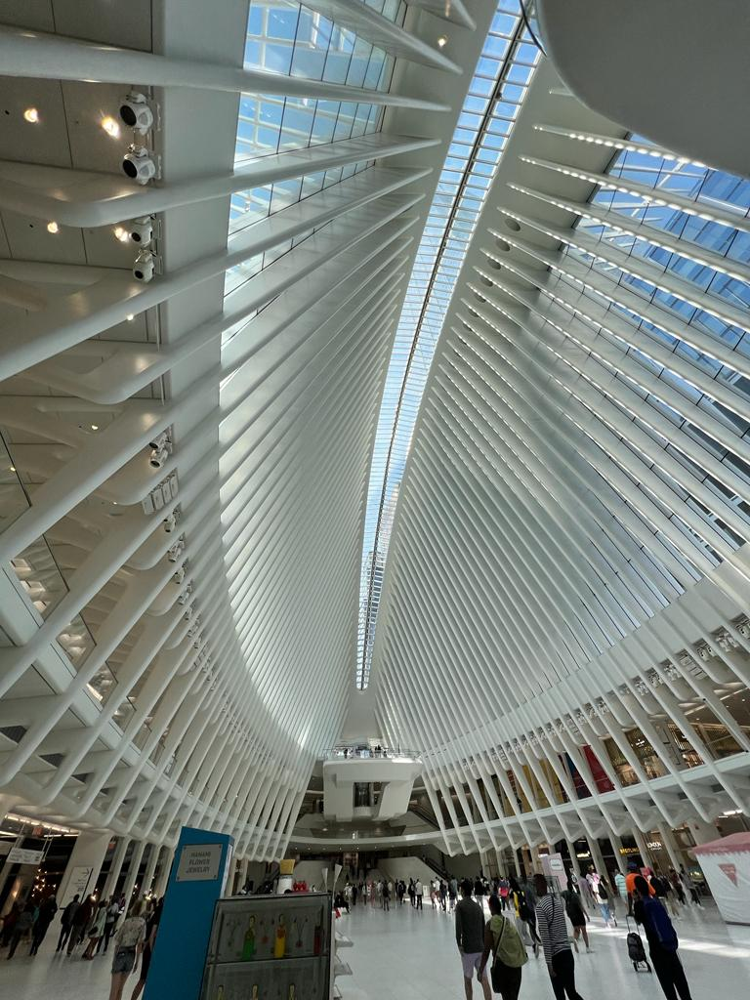

Día 1
Mirador The Edge & The Vessel, High LIne, Chelsea market, Little Island, Brooklyn Bridge, ver el atardecer en Dumbo Park
Para comer: Ellens Stardust

Día 2
Estatua de la libertad, Wall Street & Edificio de la Bolsa de NY, Museo 11S, Estación de metro Oculus & Times Square
Para comer: Brooklyn Chop House & Shake Shack
Día 3
Isla de Roosevelt, Grand Central terminal, Biblioteca pública, Bryant park, Edificio Flatiron & Empire State building
Para comer: Upland
Día 4
Central Park, Memorial de John Lennon, Museo de historia Natural, MET, Museo de arte moderno MOMA & Museo Guggenheim
Para comer: Katz delicatessen
Día 5
Barrio Soho, Chinatown, Little Italy, Ir de compras por la 5ta avenida, Times Square. Ir a un musical de Broadway
Para comer: Black Tap
Algunos consejos
- Siempre dejar propina
- Contrata un seguro de viaje
- Visita los sitios turísticos a primera hora
- Evalua comprar un pase turístico